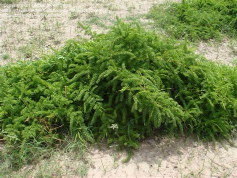

Overview
Botanical Name: Asparagus adscendens Roxb.
Family: Liliaceae (Rasona kula)
Sanskrit Name: Mushali
Vernacular Names
- Hindi Name: Safed Musali
- Kannada Name: Bili Mushali
- Uttar Pradesh Name: Jhirna
- English Name: White Musali
- Marathi Name: Safed Musli
- Gujarati Name: Dholi Musali, Ujali Musli
- Tamil Name: Tannir Bittang
- Telugu Name: Sallogadda
- Urdu Name: Musli
- Punjabi Name: Syahoo Musli
- Afghani Name: Sakakulae
Uses and Applications
- Low Sperm Count & Libido: Root powder (3-5 g) mixed with milk.
- Burning Micturition: Cold infusion of root (40-50 ml).
- Skin Complexion: Powder mixed with milk and honey, applied to skin.
- Diabetes & Sexual Weakness: Root powder (10 g) with milk, boiled and consumed (20-30 ml).
- Leucorrhea & Diarrhea: Root powder used as a paste or in decoction.
- Deafness: Churna of Musali and Bakuchi with Ghee or honey.
- Freckles: Root pounded with goat's milk and honey applied to face.
- Aphrodisiac: Powder with Guduchi Satva, Kapikacchu, Goksura, Salmali, Amalaki, milk, and Ghee.
Traditional Uses
- Guru: Heavy to digest.
- Vrushya: Aphrodisiac, improves vigor.
- Rasayani: Anti-aging, rejuvenates cells and tissues.
- Brumhana: Nourishing, nutritious.
Medicinal Properties
- Rasa (Taste): Madhura (Sweet), Tikta (Bitter)
- Guna (Qualities): Guru (Heavy), Snigdha (Slimy)
- Vipaka: Madhura (Sweet after digestion)
- Veerya (Potency): Sheeta (Cold)
- Karma (Actions): Vatapitta Shamaka (Reduces Vata and Pitta), Kaphavardaka (Increases Kapha)
- Part Used: Root
- Dosage: Root powder – 3 to 6 g
Home Remedies
- Muscular Dystrophy: Decoction or medicated milk of Musali.
- Rejuvenation & Vigor: Musli powder with milk, Gulkand, or Ghee.
- Leucorrhea & Phosphaturia: Fine paste of Musali with milk and sugar candy.
- Hairline Fractures: Fine paste application for fracture healing.
Chemical Composition
- Asparagin
- Sapogenins A and B (Stigmasterol, Sarsasapogenin)
Adverse Effects
No known or reported adverse effects with normal use.
Interactions
- Homeopathic Medicine: No adverse reactions known.
- Supplements: Generally compatible with dietary supplements; consult a doctor if taking multiple products.
- Western Medicines: Seek medical advice; take Allopathic medicine first, wait 30 minutes, then take Ayurvedic medicine.
Ayurvedic Medicines with Musli
- Kaunch Pak: For male infertility; improves sperm count and quality.
- Musli Khadiradi Kashayam: Treats gynecological conditions like leucorrhea and menorrhagia.
- Xytone Capsules: For stress and associated symptoms.
- Raja Malt: Improves sexual strength and energy.
Sanskrit Synonyms
- Talamuli
- Talapatra, Talapatri
- Vrushaskanda, Mahavrusha, Vrusya Kandha
- Hiranyapushpi
- Kharjuri, Khalini, Gavali
Varieties
- Safed Musli: Asparagus adscendens
- Kali Musli: Curculigo orchioides
- Chamara Musali: Ampelocissus Araneosa
Morphology
- Height: 2-3 cm
- Stem: Soft, slippery, white
- Leaves: Dark green, palm-like
- Flowers: Small, yellow, rainy season
- Roots: White, soft
Classical Categorization
- Bhavaprakasha: Guduchyadi Varga
- Kaiyyadeva Nighantu: Oushadhi Varga
- Shodala Nighantu: Karaveeradi Varga
- Raja Nighantu: Moolakadi Varga
- Priya Nighantu: Saradi Varga
- PV Sharma: Vrushyadi Varga, Shukrajanana
Classical References
Mentioned in Sushruta Samhita, Chikitsa and Uttara Stana. Descriptions and therapeutic uses noted in Chikitsa Stana 7th chapter and Uttara Stana 51st chapter.